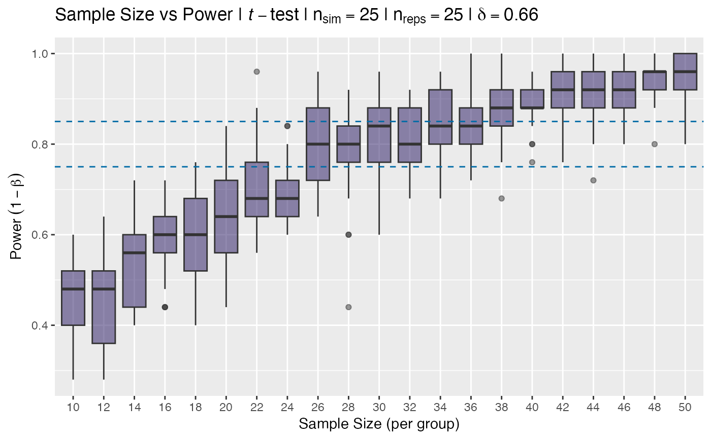
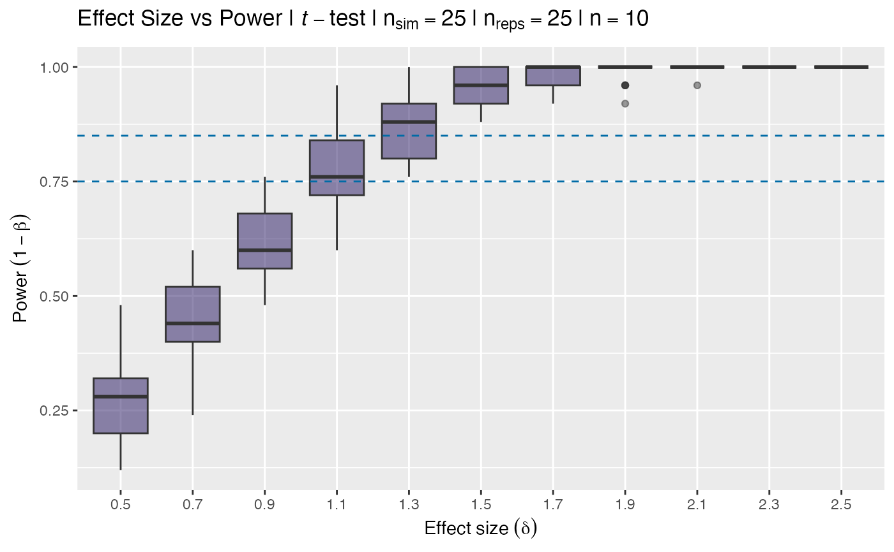

t_power_curve.RdCreate a power curve from simulated data for either
a given set of sample size or effect size values (variable),
while holding sample or effect size (whichever is not
defined in variable) constant.
S3 print method for t_power_curve objects
S3 plot method for "t_power_curve" objects.
t_power_curve(
sequence,
n = NULL,
delta = NULL,
nsim = 200L,
reps = 25L,
verbose = interactive(),
...
)
# S3 method for class 't_power_curve'
print(x, ...)
# S3 method for class 't_power_curve'
plot(x, ...)numeric(n). A sequence of values to vary the
appropriate variable, either n or delta.
integer(1). The sample size.
double(1). The effect size.
integer(1). Number of simulations to perform
in estimating power, (\(1 - \beta\)).
integer(1). Number of simulations per box to generate,
i.e. number of points within each simulation box.
logical(1). Should function be run in verbose mode?
Additional arguments passed either to t_test_power(),
only alpha =, or to the S3 plotting method.
A t_power_curve class object, the result of a call
to t_power_curve().
A t_power_curve class object.
A ggplot of boxplots.
# constant effect size
size <- t_power_curve(seq(10, 50, 2), delta = 0.66, nsim = 25)
size
#> ── t-test Power Curve Simulation ───────────────────────────────────────────────
#> • Sim table 25 x 21
#> • Sims per calculation 25
#> • Repeats per sim (per box) 25
#> • Constant delta = 0.66
#> • Varying n
#> • Sequence 10, 12, 14, 16, 18, 20, 22, 24, 26, 28, 30, 32, 34, 36, 38, 40, 42, 44, 46, 48, 50
#> ════════════════════════════════════════════════════════════════════════════════
# constant sample size
delta <- t_power_curve(seq(0.5, 2.5, 0.2), n = 10, nsim = 25)
delta
#> ── t-test Power Curve Simulation ───────────────────────────────────────────────
#> • Sim table 25 x 11
#> • Sims per calculation 25
#> • Repeats per sim (per box) 25
#> • Constant n = 10
#> • Varying delta
#> • Sequence 0.5, 0.7, 0.9, 1.1, 1.3, 1.5, 1.7, 1.9, 2.1, 2.3, 2.5
#> ════════════════════════════════════════════════════════════════════════════════
plot(size)

plot(delta)
